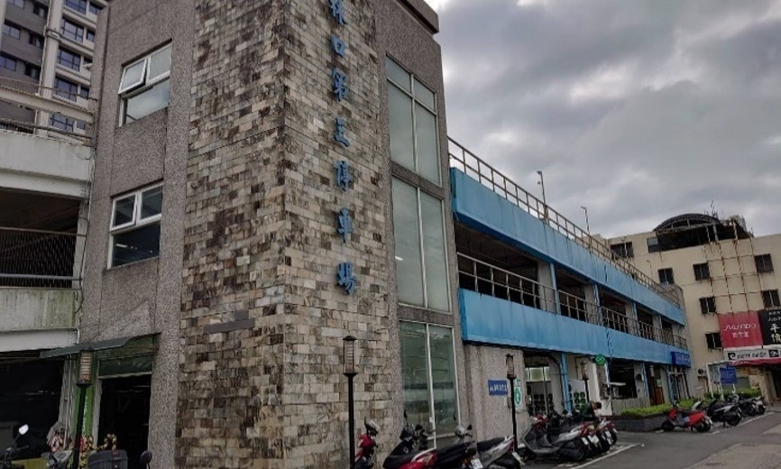
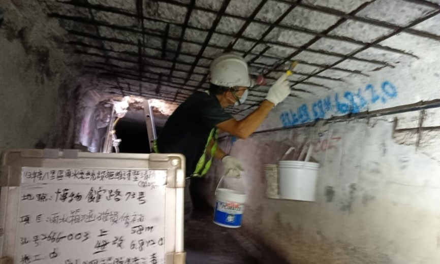
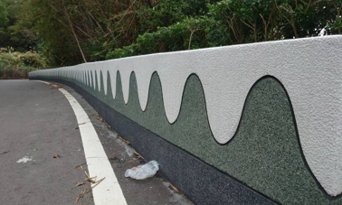

工程實績

公有停車場災損勘檢

箱涵鋼筋外露除鏽補強工程

護欄抿石子美化工程

陸橋防水處理及油漆彩繪工程
安全．負責．實現
達博思由具備公共工程豐富經驗與專業技術的團隊成員組成，我們從事土木、水利、大地、建築、補強、公園、景觀等各類公共工程技術服務工作。 訓練每一位工程師具備一定程度的行政與採購專業，深入了解需求，遇窒礙難行之處進行有效溝通，並提供全方位的專業服務。
與業主需求或安全有關的急迫性案件，達博思能及時到點勘察，提出相關對策與建議。 對於已承接的案件更能有效管制廠商完成時效、落實製表列管、定期追蹤施工廠商辦理情形、更新進度並快速回報。
土木、水利、大地、建築、補強、公園、景觀、採購等各類公共工程技術服務工作
工址調查、環境影響評估、可行性研究、初步與細部設計、施工規範編訂、工程計算、施工與進度計畫、預算與招標資料編撰。
透水及生態工程
砌石、石籠護岸
雲端專案管理系統DABS-NAS
e-GNSS即時動態測量
無人機3D點雲建模
動畫模擬演示
1.現場監工，執行品質、安全、進度與環保監控
2.擬定監造計畫、撰寫日誌與品質文件、材料與施工變更紀錄
3.定期稽核施工行為與文件、現場查驗施工品質與安全作業
4.協調施工進度與變更，解決設計與施工間的代溝
5.完工檢驗、結算建議與驗收協助
6.由具資格的執業技師，執行簽證與監造作業
7.監工日報、改善追蹤、材料/進度報告與履約建議
1.規劃與設計審查
2.編審招標文件
3.編審設備規格
4.招標與決標協辦
5.施工監造與履約管理
6.協辦採購及訂約
7.進度追蹤與控制
8.預算與成本控制
9.專案風險管理與品質控制
10.專案收尾與驗收支援
公有停車場災損勘檢
箱涵鋼筋外露除鏽補強工程
護欄抿石子美化工程
陸橋防水處理及油漆彩繪工程
您可透過以下方式聯繫我們